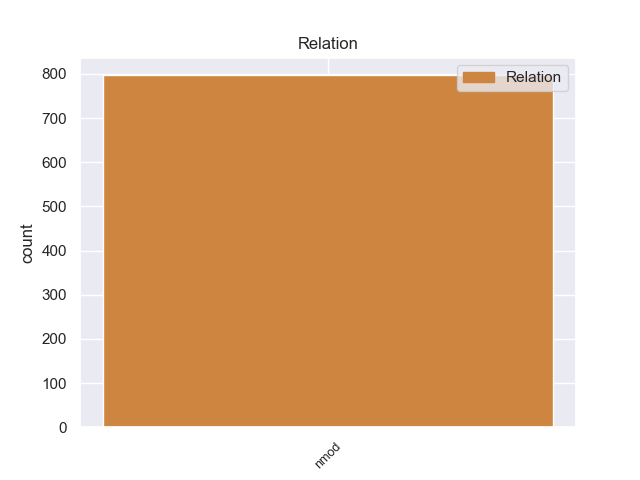
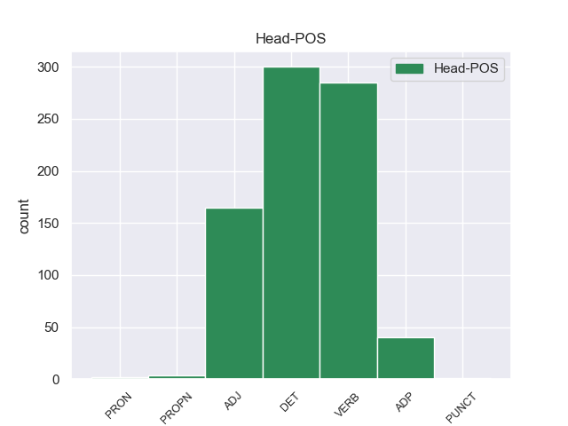
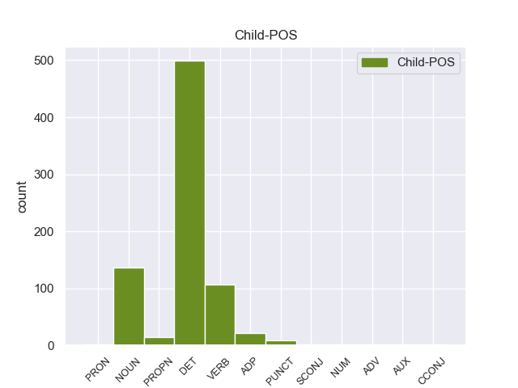

Distribution of features within this leaf



Agreement Rules sorted by frequency.
- When the dependent token is the nominal modifier(nmod) of the head token, and the head token is DET and the dependent token is DET.
1 Τόσο _ _ _ _ 0 _ _ _
2 το _ _ _ _ 0 _ _ _
3 ζήτημα _ _ _ _ 0 _ _ _
4 της _ _ _ _ 0 _ _ _
5 ασυλίας _ _ _ _ 0 _ _ _
6 όσο _ _ _ _ 0 _ _ _
7 και _ _ _ _ 0 _ _ _
8 η _ _ _ _ 0 _ _ _
9 αίτηση _ _ _ _ 0 _ _ _
10 για _ _ _ _ 0 _ _ _
11 άρση _ _ _ _ 0 _ _ _
12 της _ _ _ _ 0 _ _ _
13 έχουν _ _ _ _ 0 _ _ _
14 σχέση _ _ _ _ 0 _ _ _
15 μόνο _ _ _ _ 0 _ _ _
16 με _ _ _ _ 0 _ _ _
17 το _ _ _ _ 0 _ _ _
18 εάν _ _ _ _ 0 _ _ _
19 το _ _ _ _ 0 _ _ _
20 Δικαστήριο _ _ _ _ 0 _ _ _
21 μπορεί _ _ _ _ 0 _ _ _
22 να _ _ _ _ 0 _ _ _
23 εκδώσει _ _ _ _ 0 _ _ _
24 δεσμευτικά _ _ _ _ 0 _ _ _
25 βουλεύματα _ _ _ _ 0 _ _ _
26 για _ _ _ _ 0 _ _ _
27 τον _ _ _ _ 0 _ _ _
28 περιορισμό _ _ _ _ 0 _ _ _
29 της _ _ _ _ 0 _ _ _
30 ελεύθερης _ _ _ _ 0 _ _ _
31 μετακίνησης _ _ _ _ 0 _ _ _
32 των _ _ _ _ 0 _ _ _
33 βουλευτών _ _ _ _ 0 _ _ _
34 του _ _ _ _ 0 _ _ _
35 Ευρωπαϊκού _ _ _ _ 0 _ _ _
36 Κοινοβουλίου _ _ _ _ 0 _ _ _
37 ή _ _ _ _ 0 _ _ _
38 την _ _ _ _ 0 _ _ _
39 ελευθερία _ _ _ _ 0 _ _ _
40 τους _ _ _ _ 0 _ _ _
41 να _ _ _ _ 0 _ _ _
42 έρχονται _ _ _ _ 0 _ _ _
43 σε _ _ _ _ 0 _ _ _
44 επικοινωνία επικοινωνία DET _ Case=Acc|Gender=Fem|Number=Sing 0 _ _ _
45 με _ _ _ _ 0 _ _ _
46 άλλα _ _ _ _ 0 _ _ _
47 πρόσωπα πρόσωπα DET _ Case=Acc|Gender=Fem|Number=Sing 44 nmod _ _
48 . _ _ _ _ 0 _ _ _
1 Θα _ _ _ _ 0 _ _ _
2 ήθελα _ _ _ _ 0 _ _ _
3 να _ _ _ _ 0 _ _ _
4 επιστήσω _ _ _ _ 0 _ _ _
5 την _ _ _ _ 0 _ _ _
6 προσοχή _ _ _ _ 0 _ _ _
7 όλων _ _ _ _ 0 _ _ _
8 των _ _ _ _ 0 _ _ _
9 συναδέλφων _ _ _ _ 0 _ _ _
10 σ _ _ _ _ 0 _ _ _
11 το _ _ _ _ 0 _ _ _
12 γεγονός _ _ _ _ 0 _ _ _
13 ότι _ _ _ _ 0 _ _ _
14 , _ _ _ _ 0 _ _ _
15 εάν _ _ _ _ 0 _ _ _
16 υπάρχουν _ _ _ _ 0 _ _ _
17 κάποιες _ _ _ _ 0 _ _ _
18 ελευθερίες _ _ _ _ 0 _ _ _
19 οι _ _ _ _ 0 _ _ _
20 οποίες _ _ _ _ 0 _ _ _
21 είναι _ _ _ _ 0 _ _ _
22 ζωτικής _ _ _ _ 0 _ _ _
23 σημασίας _ _ _ _ 0 _ _ _
24 για _ _ _ _ 0 _ _ _
25 την _ _ _ _ 0 _ _ _
26 άσκηση άσκηση VERB _ Case=Acc|Gender=Fem|Number=Sing 0 _ _ _
27 του _ _ _ _ 0 _ _ _
28 λειτουργήματος _ _ _ _ 0 _ _ _
29 της _ _ _ _ 0 _ _ _
30 δημόσιας _ _ _ _ 0 _ _ _
31 εκπροσώπησης _ _ _ _ 0 _ _ _
32 , _ _ _ _ 0 _ _ _
33 ιδίως _ _ _ _ 0 _ _ _
34 για _ _ _ _ 0 _ _ _
35 ένα _ _ _ _ 0 _ _ _
36 Κοινοβούλιο _ _ _ _ 0 _ _ _
37 σαν _ _ _ _ 0 _ _ _
38 το _ _ _ _ 0 _ _ _
39 δικό _ _ _ _ 0 _ _ _
40 μας _ _ _ _ 0 _ _ _
41 , _ _ _ _ 0 _ _ _
42 η _ _ _ _ 0 _ _ _
43 ελευθερία _ _ _ _ 0 _ _ _
44 της _ _ _ _ 0 _ _ _
45 επικοινωνίας _ _ _ _ 0 _ _ _
46 με _ _ _ _ 0 _ _ _
47 άλλους _ _ _ _ 0 _ _ _
48 πολίτες _ _ _ _ 0 _ _ _
49 και _ _ _ _ 0 _ _ _
50 με _ _ _ _ 0 _ _ _
51 τους _ _ _ _ 0 _ _ _
52 πολίτες _ _ _ _ 0 _ _ _
53 τρίτων _ _ _ _ 0 _ _ _
54 χωρών _ _ _ _ 0 _ _ _
55 , _ _ _ _ 0 _ _ _
56 καθώς _ _ _ _ 0 _ _ _
57 και _ _ _ _ 0 _ _ _
58 η _ _ _ _ 0 _ _ _
59 ελευθερία _ _ _ _ 0 _ _ _
60 μετακίνησης _ _ _ _ 0 _ _ _
61 , _ _ _ _ 0 _ _ _
62 είναι _ _ _ _ 0 _ _ _
63 κρίσιμες _ _ _ _ 0 _ _ _
64 για _ _ _ _ 0 _ _ _
65 τη _ _ _ _ 0 _ _ _
66 διεκπεραίωση ο DET _ Case=Acc|Gender=Fem|Number=Sing 26 nmod _ _
67 του _ _ _ _ 0 _ _ _
68 έργου _ _ _ _ 0 _ _ _
69 μας _ _ _ _ 0 _ _ _
70 . _ _ _ _ 0 _ _ _
1 Τόσο _ _ _ _ 0 _ _ _
2 το _ _ _ _ 0 _ _ _
3 ζήτημα _ _ _ _ 0 _ _ _
4 της _ _ _ _ 0 _ _ _
5 ασυλίας _ _ _ _ 0 _ _ _
6 όσο _ _ _ _ 0 _ _ _
7 και _ _ _ _ 0 _ _ _
8 η _ _ _ _ 0 _ _ _
9 αίτηση _ _ _ _ 0 _ _ _
10 για _ _ _ _ 0 _ _ _
11 άρση _ _ _ _ 0 _ _ _
12 της _ _ _ _ 0 _ _ _
13 έχουν _ _ _ _ 0 _ _ _
14 σχέση _ _ _ _ 0 _ _ _
15 μόνο _ _ _ _ 0 _ _ _
16 με _ _ _ _ 0 _ _ _
17 το _ _ _ _ 0 _ _ _
18 εάν _ _ _ _ 0 _ _ _
19 το _ _ _ _ 0 _ _ _
20 Δικαστήριο _ _ _ _ 0 _ _ _
21 μπορεί _ _ _ _ 0 _ _ _
22 να _ _ _ _ 0 _ _ _
23 εκδώσει _ _ _ _ 0 _ _ _
24 δεσμευτικά _ _ _ _ 0 _ _ _
25 βουλεύματα _ _ _ _ 0 _ _ _
26 για _ _ _ _ 0 _ _ _
27 τον _ _ _ _ 0 _ _ _
28 περιορισμό περιορισμό ADJ _ Case=Acc|Gender=Fem|Number=Sing 0 _ _ _
29 της _ _ _ _ 0 _ _ _
30 ελεύθερης _ _ _ _ 0 _ _ _
31 μετακίνησης _ _ _ _ 0 _ _ _
32 των _ _ _ _ 0 _ _ _
33 βουλευτών _ _ _ _ 0 _ _ _
34 του _ _ _ _ 0 _ _ _
35 Ευρωπαϊκού _ _ _ _ 0 _ _ _
36 Κοινοβουλίου _ _ _ _ 0 _ _ _
37 ή _ _ _ _ 0 _ _ _
38 την _ _ _ _ 0 _ _ _
39 ελευθερία _ _ _ _ 0 _ _ _
40 τους _ _ _ _ 0 _ _ _
41 να _ _ _ _ 0 _ _ _
42 έρχονται _ _ _ _ 0 _ _ _
43 σε _ _ _ _ 0 _ _ _
44 επικοινωνία επικοινωνία DET _ Case=Acc|Gender=Fem|Number=Sing 28 nmod _ _
45 με _ _ _ _ 0 _ _ _
46 άλλα _ _ _ _ 0 _ _ _
47 πρόσωπα _ _ _ _ 0 _ _ _
48 . _ _ _ _ 0 _ _ _
1 Θα _ _ _ _ 0 _ _ _
2 ήθελα _ _ _ _ 0 _ _ _
3 να _ _ _ _ 0 _ _ _
4 επιστήσω _ _ _ _ 0 _ _ _
5 την _ _ _ _ 0 _ _ _
6 προσοχή _ _ _ _ 0 _ _ _
7 όλων _ _ _ _ 0 _ _ _
8 των _ _ _ _ 0 _ _ _
9 συναδέλφων _ _ _ _ 0 _ _ _
10 σ _ _ _ _ 0 _ _ _
11 το _ _ _ _ 0 _ _ _
12 γεγονός _ _ _ _ 0 _ _ _
13 ότι _ _ _ _ 0 _ _ _
14 , _ _ _ _ 0 _ _ _
15 εάν _ _ _ _ 0 _ _ _
16 υπάρχουν _ _ _ _ 0 _ _ _
17 κάποιες _ _ _ _ 0 _ _ _
18 ελευθερίες _ _ _ _ 0 _ _ _
19 οι _ _ _ _ 0 _ _ _
20 οποίες _ _ _ _ 0 _ _ _
21 είναι _ _ _ _ 0 _ _ _
22 ζωτικής _ _ _ _ 0 _ _ _
23 σημασίας _ _ _ _ 0 _ _ _
24 για _ _ _ _ 0 _ _ _
25 την _ _ _ _ 0 _ _ _
26 άσκηση άσκηση VERB _ Case=Acc|Gender=Fem|Number=Sing 0 _ _ _
27 του _ _ _ _ 0 _ _ _
28 λειτουργήματος _ _ _ _ 0 _ _ _
29 της _ _ _ _ 0 _ _ _
30 δημόσιας _ _ _ _ 0 _ _ _
31 εκπροσώπησης _ _ _ _ 0 _ _ _
32 , _ _ _ _ 0 _ _ _
33 ιδίως _ _ _ _ 0 _ _ _
34 για _ _ _ _ 0 _ _ _
35 ένα _ _ _ _ 0 _ _ _
36 Κοινοβούλιο _ _ _ _ 0 _ _ _
37 σαν _ _ _ _ 0 _ _ _
38 το _ _ _ _ 0 _ _ _
39 δικό _ _ _ _ 0 _ _ _
40 μας _ _ _ _ 0 _ _ _
41 , _ _ _ _ 0 _ _ _
42 η _ _ _ _ 0 _ _ _
43 ελευθερία _ _ _ _ 0 _ _ _
44 της _ _ _ _ 0 _ _ _
45 επικοινωνίας _ _ _ _ 0 _ _ _
46 με _ _ _ _ 0 _ _ _
47 άλλους _ _ _ _ 0 _ _ _
48 πολίτες _ _ _ _ 0 _ _ _
49 και _ _ _ _ 0 _ _ _
50 με _ _ _ _ 0 _ _ _
51 τους _ _ _ _ 0 _ _ _
52 πολίτες _ _ _ _ 0 _ _ _
53 τρίτων _ _ _ _ 0 _ _ _
54 χωρών _ _ _ _ 0 _ _ _
55 , _ _ _ _ 0 _ _ _
56 καθώς _ _ _ _ 0 _ _ _
57 και _ _ _ _ 0 _ _ _
58 η _ _ _ _ 0 _ _ _
59 ελευθερία ελευθερία NOUN _ Case=Acc|Gender=Fem|Number=Sing 26 nmod _ _
60 μετακίνησης _ _ _ _ 0 _ _ _
61 , _ _ _ _ 0 _ _ _
62 είναι _ _ _ _ 0 _ _ _
63 κρίσιμες _ _ _ _ 0 _ _ _
64 για _ _ _ _ 0 _ _ _
65 τη _ _ _ _ 0 _ _ _
66 διεκπεραίωση _ _ _ _ 0 _ _ _
67 του _ _ _ _ 0 _ _ _
68 έργου _ _ _ _ 0 _ _ _
69 μας _ _ _ _ 0 _ _ _
70 . _ _ _ _ 0 _ _ _
1 Σ _ _ _ _ 0 _ _ _
2 την _ _ _ _ 0 _ _ _
3 παρούσα παρούσα VERB _ Case=Acc|Gender=Fem|Number=Sing 8 nmod _ _
4 μορφή _ _ _ _ 0 _ _ _
5 της _ _ _ _ 0 _ _ _
6 , _ _ _ _ 0 _ _ _
7 η _ _ _ _ 0 _ _ _
8 αίτηση ο VERB _ Case=Acc|Gender=Fem|Number=Sing 0 _ _ _
9 άρσης _ _ _ _ 0 _ _ _
10 της _ _ _ _ 0 _ _ _
11 ασυλίας _ _ _ _ 0 _ _ _
12 παρουσιάζεται _ _ _ _ 0 _ _ _
13 απαράδεκτα _ _ _ _ 0 _ _ _
14 ασαφής _ _ _ _ 0 _ _ _
15 . _ _ _ _ 0 _ _ _
1 Εξαιτίας _ _ _ _ 0 _ _ _
2 του _ _ _ _ 0 _ _ _
3 , _ _ _ _ 0 _ _ _
4 όπως _ _ _ _ 0 _ _ _
5 έχει _ _ _ _ 0 _ _ _
6 οριστεί _ _ _ _ 0 _ _ _
7 , _ _ _ _ 0 _ _ _
8 κινεζικού _ _ _ _ 0 _ _ _
9 απαρτχάιντ απαρτχάιντ DET _ Case=Gen|Gender=Fem|Number=Sing 0 _ _ _
10 , _ _ _ _ 0 _ _ _
11 οι _ _ _ _ 0 _ _ _
12 Θιβετιανοί θιβετιανοί VERB _ Case=Gen|Gender=Fem|Number=Sing 9 nmod _ _
13 έχουν _ _ _ _ 0 _ _ _
14 σήμερα _ _ _ _ 0 _ _ _
15 χαμηλότερο _ _ _ _ 0 _ _ _
16 προσδόκιμο _ _ _ _ 0 _ _ _
17 ζωής _ _ _ _ 0 _ _ _
18 , _ _ _ _ 0 _ _ _
19 ποσοστό _ _ _ _ 0 _ _ _
20 αλφαβητισμού _ _ _ _ 0 _ _ _
21 , _ _ _ _ 0 _ _ _
22 και _ _ _ _ 0 _ _ _
23 κατά _ _ _ _ 0 _ _ _
24 κεφαλή _ _ _ _ 0 _ _ _
25 εισόδημα _ _ _ _ 0 _ _ _
26 από _ _ _ _ 0 _ _ _
27 τους _ _ _ _ 0 _ _ _
28 Κινέζους _ _ _ _ 0 _ _ _
29 αποίκους _ _ _ _ 0 _ _ _
30 του _ _ _ _ 0 _ _ _
31 Θιβέτ _ _ _ _ 0 _ _ _
32 . _ _ _ _ 0 _ _ _
1 Ο _ _ _ _ 0 _ _ _
2 λόγος _ _ _ _ 0 _ _ _
3 γίνεται _ _ _ _ 0 _ _ _
4 για _ _ _ _ 0 _ _ _
5 τον _ _ _ _ 0 _ _ _
6 Χάουμε _ _ _ _ 0 _ _ _
7 Μάτας _ _ _ _ 0 _ _ _
8 , _ _ _ _ 0 _ _ _
9 ο _ _ _ _ 0 _ _ _
10 οποίος _ _ _ _ 0 _ _ _
11 ήταν _ _ _ _ 0 _ _ _
12 Υπουργός υπουργός DET _ Case=Acc|Gender=Neut|Number=Sing 0 _ _ _
13 Περιβάλλοντος _ _ _ _ 0 _ _ _
14 τα _ _ _ _ 0 _ _ _
15 έτη ο NOUN _ Case=Acc|Gender=Fem|Number=Sing 12 nmod _ _
16 2000-2003 _ _ _ _ 0 _ _ _
17 και _ _ _ _ 0 _ _ _
18 Περιφερειακός _ _ _ _ 0 _ _ _
19 Πρωθυπουργός _ _ _ _ 0 _ _ _
20 των _ _ _ _ 0 _ _ _
21 Βαλεαρίδων _ _ _ _ 0 _ _ _
22 Νήσων _ _ _ _ 0 _ _ _
23 κατά _ _ _ _ 0 _ _ _
24 την _ _ _ _ 0 _ _ _
25 περίοδο _ _ _ _ 0 _ _ _
26 2003-2007 _ _ _ _ 0 _ _ _
27 . _ _ _ _ 0 _ _ _
1 Τόσο _ _ _ _ 0 _ _ _
2 το _ _ _ _ 0 _ _ _
3 ζήτημα ζήτημα ADP _ Case=Gen|Gender=Fem|Number=Sing 0 _ _ _
4 της _ _ _ _ 0 _ _ _
5 ασυλίας _ _ _ _ 0 _ _ _
6 όσο _ _ _ _ 0 _ _ _
7 και _ _ _ _ 0 _ _ _
8 η _ _ _ _ 0 _ _ _
9 αίτηση _ _ _ _ 0 _ _ _
10 για _ _ _ _ 0 _ _ _
11 άρση _ _ _ _ 0 _ _ _
12 της _ _ _ _ 0 _ _ _
13 έχουν _ _ _ _ 0 _ _ _
14 σχέση _ _ _ _ 0 _ _ _
15 μόνο _ _ _ _ 0 _ _ _
16 με _ _ _ _ 0 _ _ _
17 το _ _ _ _ 0 _ _ _
18 εάν _ _ _ _ 0 _ _ _
19 το _ _ _ _ 0 _ _ _
20 Δικαστήριο δικαστήριο DET _ Case=Gen|Gender=Fem|Number=Sing 3 nmod _ _
21 μπορεί _ _ _ _ 0 _ _ _
22 να _ _ _ _ 0 _ _ _
23 εκδώσει _ _ _ _ 0 _ _ _
24 δεσμευτικά _ _ _ _ 0 _ _ _
25 βουλεύματα _ _ _ _ 0 _ _ _
26 για _ _ _ _ 0 _ _ _
27 τον _ _ _ _ 0 _ _ _
28 περιορισμό _ _ _ _ 0 _ _ _
29 της _ _ _ _ 0 _ _ _
30 ελεύθερης _ _ _ _ 0 _ _ _
31 μετακίνησης _ _ _ _ 0 _ _ _
32 των _ _ _ _ 0 _ _ _
33 βουλευτών _ _ _ _ 0 _ _ _
34 του _ _ _ _ 0 _ _ _
35 Ευρωπαϊκού _ _ _ _ 0 _ _ _
36 Κοινοβουλίου _ _ _ _ 0 _ _ _
37 ή _ _ _ _ 0 _ _ _
38 την _ _ _ _ 0 _ _ _
39 ελευθερία _ _ _ _ 0 _ _ _
40 τους _ _ _ _ 0 _ _ _
41 να _ _ _ _ 0 _ _ _
42 έρχονται _ _ _ _ 0 _ _ _
43 σε _ _ _ _ 0 _ _ _
44 επικοινωνία _ _ _ _ 0 _ _ _
45 με _ _ _ _ 0 _ _ _
46 άλλα _ _ _ _ 0 _ _ _
47 πρόσωπα _ _ _ _ 0 _ _ _
48 . _ _ _ _ 0 _ _ _
1 Ο _ _ _ _ 0 _ _ _
2 Πρόεδρος _ _ _ _ 0 _ _ _
3 της _ _ _ _ 0 _ _ _
4 Ευρωπαϊκής _ _ _ _ 0 _ _ _
5 Επιτροπής _ _ _ _ 0 _ _ _
6 , _ _ _ _ 0 _ _ _
7 Μανουέλ μανουέλ NOUN _ Case=Gen|Gender=Fem|Number=Sing 12 nmod _ _
8 Μπαρόζο _ _ _ _ 0 _ _ _
9 , _ _ _ _ 0 _ _ _
10 και _ _ _ _ 0 _ _ _
11 ο _ _ _ _ 0 _ _ _
12 Επικεφαλής επικεφαλής ADJ _ Case=Gen|Gender=Fem|Number=Sing 0 _ _ _
13 των _ _ _ _ 0 _ _ _
14 Φιλελεύθερων _ _ _ _ 0 _ _ _
15 του _ _ _ _ 0 _ _ _
16 Ευρωκοινοβουλίου _ _ _ _ 0 _ _ _
17 και _ _ _ _ 0 _ _ _
18 πρώην _ _ _ _ 0 _ _ _
19 Πρωθυπουργός _ _ _ _ 0 _ _ _
20 του _ _ _ _ 0 _ _ _
21 Βελγίου _ _ _ _ 0 _ _ _
22 , _ _ _ _ 0 _ _ _
23 Γκι _ _ _ _ 0 _ _ _
24 Φέρχοφστατ _ _ _ _ 0 _ _ _
25 , _ _ _ _ 0 _ _ _
26 εξέφρασαν _ _ _ _ 0 _ _ _
27 τα _ _ _ _ 0 _ _ _
28 συλληπήτηρια _ _ _ _ 0 _ _ _
29 τους _ _ _ _ 0 _ _ _
30 σ _ _ _ _ 0 _ _ _
31 τις _ _ _ _ 0 _ _ _
32 οικογένειες _ _ _ _ 0 _ _ _
33 των _ _ _ _ 0 _ _ _
34 θυμάτων _ _ _ _ 0 _ _ _
35 . _ _ _ _ 0 _ _ _
1 Επίσης _ _ _ _ 0 _ _ _
2 , _ _ _ _ 0 _ _ _
3 η _ _ _ _ 0 _ _ _
4 εφαρμογή _ _ _ _ 0 _ _ _
5 του _ _ _ _ 0 _ _ _
6 γενικού _ _ _ _ 0 _ _ _
7 καθεστώτος _ _ _ _ 0 _ _ _
8 δεν _ _ _ _ 0 _ _ _
9 θα _ _ _ _ 0 _ _ _
10 ήταν _ _ _ _ 0 _ _ _
11 ένας _ _ _ _ 0 _ _ _
12 ικανοποιητικός _ _ _ _ 0 _ _ _
13 τρόπος _ _ _ _ 0 _ _ _
14 για _ _ _ _ 0 _ _ _
15 τη _ _ _ _ 0 _ _ _
16 βελτίωση _ _ _ _ 0 _ _ _
17 του _ _ _ _ 0 _ _ _
18 ανταγωνισμού _ _ _ _ 0 _ _ _
19 σ _ _ _ _ 0 _ _ _
20 την _ _ _ _ 0 _ _ _
21 αγορά ο ADJ _ Case=Acc|Gender=Fem|Number=Sing 0 _ _ _
22 υπηρεσιών _ _ _ _ 0 _ _ _
23 μετά _ _ _ _ 0 _ _ _
24 την _ _ _ _ 0 _ _ _
25 πώληση πώληση VERB _ Case=Acc|Gender=Fem|Number=Sing 21 nmod _ _
26 . _ _ _ _ 0 _ _ _
1 Προτάθηκαν _ _ _ _ 0 _ _ _
2 για _ _ _ _ 0 _ _ _
3 τη _ _ _ _ 0 _ _ _
4 θέση _ _ _ _ 0 _ _ _
5 του _ _ _ _ 0 _ _ _
6 Γενικού _ _ _ _ 0 _ _ _
7 Διοικητή διοικητή DET _ Case=Gen|Gender=Fem|Number=Sing 0 _ _ _
8 του _ _ _ _ 0 _ _ _
9 νησιού _ _ _ _ 0 _ _ _
10 οι _ _ _ _ 0 _ _ _
11 Δροζ _ _ _ _ 0 _ _ _
12 , _ _ _ _ 0 _ _ _
13 Σέφερ _ _ _ _ 0 _ _ _
14 , _ _ _ _ 0 _ _ _
15 ο _ _ _ _ 0 _ _ _
16 Μαυροβούνιος _ _ _ _ 0 _ _ _
17 Πέτροβιτς πέτροβιτς PROPN _ Case=Gen|Gender=Fem|Number=Sing 7 nmod _ _
18 Μπόζα _ _ _ _ 0 _ _ _
19 , _ _ _ _ 0 _ _ _
20 ο _ _ _ _ 0 _ _ _
21 πρίγκιπας _ _ _ _ 0 _ _ _
22 Βάττεμβεργ _ _ _ _ 0 _ _ _
23 ενώ _ _ _ _ 0 _ _ _
24 οι _ _ _ _ 0 _ _ _
25 Τούρκοι _ _ _ _ 0 _ _ _
26 ήθελαν _ _ _ _ 0 _ _ _
27 γι' _ _ _ _ 0 _ _ _
28 αυτή _ _ _ _ 0 _ _ _
29 τη _ _ _ _ 0 _ _ _
30 θέση _ _ _ _ 0 _ _ _
31 τον _ _ _ _ 0 _ _ _
32 Ανθόπουλο _ _ _ _ 0 _ _ _
33 πασά _ _ _ _ 0 _ _ _
34 . _ _ _ _ 0 _ _ _
1 Αυτό _ _ _ _ 0 _ _ _
2 είναι _ _ _ _ 0 _ _ _
3 το _ _ _ _ 0 _ _ _
4 πιο _ _ _ _ 0 _ _ _
5 δυνατό _ _ _ _ 0 _ _ _
6 καταγεγγραμένο _ _ _ _ 0 _ _ _
7 ξέσπασμα ξέσπασμα VERB _ Case=Gen|Gender=Fem|Number=Sing 0 _ _ _
8 του _ _ _ _ 0 _ _ _
9 μηνός μηνόςς ADP _ Case=Gen|Gender=Fem|Number=Sing 7 nmod _ _
10 Μάρτιου _ _ _ _ 0 _ _ _
11 , _ _ _ _ 0 _ _ _
12 καθώς _ _ _ _ 0 _ _ _
13 το _ _ _ _ 0 _ _ _
14 προηγούμενο _ _ _ _ 0 _ _ _
15 ρεκόρ _ _ _ _ 0 _ _ _
16 ήταν _ _ _ _ 0 _ _ _
17 2006 _ _ _ _ 0 _ _ _
18 , _ _ _ _ 0 _ _ _
19 όταν _ _ _ _ 0 _ _ _
20 σ _ _ _ _ 0 _ _ _
21 το _ _ _ _ 0 _ _ _
22 τριήμερο _ _ _ _ 0 _ _ _
23 11 _ _ _ _ 0 _ _ _
24 με _ _ _ _ 0 _ _ _
25 13 _ _ _ _ 0 _ _ _
26 Μαρτίου _ _ _ _ 0 _ _ _
27 σημειώθηκαν _ _ _ _ 0 _ _ _
28 74 _ _ _ _ 0 _ _ _
29 σίφωνες _ _ _ _ 0 _ _ _
30 . _ _ _ _ 0 _ _ _
1 Τόσο _ _ _ _ 0 _ _ _
2 το _ _ _ _ 0 _ _ _
3 ζήτημα ζήτημα ADP _ Case=Gen|Gender=Fem|Number=Sing 0 _ _ _
4 της _ _ _ _ 0 _ _ _
5 ασυλίας ο NOUN _ Case=Gen|Gender=Fem|Number=Sing 3 nmod _ _
6 όσο _ _ _ _ 0 _ _ _
7 και _ _ _ _ 0 _ _ _
8 η _ _ _ _ 0 _ _ _
9 αίτηση _ _ _ _ 0 _ _ _
10 για _ _ _ _ 0 _ _ _
11 άρση _ _ _ _ 0 _ _ _
12 της _ _ _ _ 0 _ _ _
13 έχουν _ _ _ _ 0 _ _ _
14 σχέση _ _ _ _ 0 _ _ _
15 μόνο _ _ _ _ 0 _ _ _
16 με _ _ _ _ 0 _ _ _
17 το _ _ _ _ 0 _ _ _
18 εάν _ _ _ _ 0 _ _ _
19 το _ _ _ _ 0 _ _ _
20 Δικαστήριο _ _ _ _ 0 _ _ _
21 μπορεί _ _ _ _ 0 _ _ _
22 να _ _ _ _ 0 _ _ _
23 εκδώσει _ _ _ _ 0 _ _ _
24 δεσμευτικά _ _ _ _ 0 _ _ _
25 βουλεύματα _ _ _ _ 0 _ _ _
26 για _ _ _ _ 0 _ _ _
27 τον _ _ _ _ 0 _ _ _
28 περιορισμό _ _ _ _ 0 _ _ _
29 της _ _ _ _ 0 _ _ _
30 ελεύθερης _ _ _ _ 0 _ _ _
31 μετακίνησης _ _ _ _ 0 _ _ _
32 των _ _ _ _ 0 _ _ _
33 βουλευτών _ _ _ _ 0 _ _ _
34 του _ _ _ _ 0 _ _ _
35 Ευρωπαϊκού _ _ _ _ 0 _ _ _
36 Κοινοβουλίου _ _ _ _ 0 _ _ _
37 ή _ _ _ _ 0 _ _ _
38 την _ _ _ _ 0 _ _ _
39 ελευθερία _ _ _ _ 0 _ _ _
40 τους _ _ _ _ 0 _ _ _
41 να _ _ _ _ 0 _ _ _
42 έρχονται _ _ _ _ 0 _ _ _
43 σε _ _ _ _ 0 _ _ _
44 επικοινωνία _ _ _ _ 0 _ _ _
45 με _ _ _ _ 0 _ _ _
46 άλλα _ _ _ _ 0 _ _ _
47 πρόσωπα _ _ _ _ 0 _ _ _
48 . _ _ _ _ 0 _ _ _
1 Λίγο _ _ _ _ 0 _ _ _
2 μετά _ _ _ _ 0 _ _ _
3 τις _ _ _ _ 0 _ _ _
4 4 _ _ _ _ 0 _ _ _
5 το _ _ _ _ 0 _ _ _
6 απόγευμα απόγευμα ADP _ Case=Acc|Gender=Fem|Number=Sing 9 nmod _ _
7 τα _ _ _ _ 0 _ _ _
8 διεθνή _ _ _ _ 0 _ _ _
9 πρακτορεία πρακτορεία DET _ Case=Acc|Gender=Fem|Number=Sing 0 _ _ _
10 μετέδιδαν _ _ _ _ 0 _ _ _
11 την _ _ _ _ 0 _ _ _
12 καθεστωτική _ _ _ _ 0 _ _ _
13 αλλαγή _ _ _ _ 0 _ _ _
14 σ _ _ _ _ 0 _ _ _
15 την _ _ _ _ 0 _ _ _
16 Αθήνα _ _ _ _ 0 _ _ _
17 . _ _ _ _ 0 _ _ _
1 Η _ _ _ _ 0 _ _ _
2 απόδειξη απόδειξη ADP _ Case=Acc|Gender=Fem|Number=Sing 0 _ _ _
3 , _ _ _ _ 0 _ _ _
4 δεκαπέντε _ _ _ _ 0 _ _ _
5 ημέρες _ _ _ _ 0 _ _ _
6 μετά _ _ _ _ 0 _ _ _
7 από _ _ _ _ 0 _ _ _
8 την _ _ _ _ 0 _ _ _
9 εισαγωγή εισαγωγή VERB _ Case=Acc|Gender=Fem|Number=Sing 2 nmod _ _
10 του _ _ _ _ 0 _ _ _
11 ευρώ _ _ _ _ 0 _ _ _
12 : _ _ _ _ 0 _ _ _
1 Η _ _ _ _ 0 _ _ _
2 σημερινή _ _ _ _ 0 _ _ _
3 μέρα _ _ _ _ 0 _ _ _
4 σ _ _ _ _ 0 _ _ _
5 το _ _ _ _ 0 _ _ _
6 Βέλγιο _ _ _ _ 0 _ _ _
7 είναι _ _ _ _ 0 _ _ _
8 ημέρα _ _ _ _ 0 _ _ _
9 πένθους _ _ _ _ 0 _ _ _
10 για _ _ _ _ 0 _ _ _
11 τα _ _ _ _ 0 _ _ _
12 θύματα θύματα ADP _ Case=Gen|Gender=Fem|Number=Sing 14 nmod _ _
13 ενός _ _ _ _ 0 _ _ _
14 αυτοκινητιστικού αυτοκινητιστικού ADJ _ Case=Gen|Gender=Fem|Number=Sing 0 _ _ _
15 δυστυχήματος _ _ _ _ 0 _ _ _
16 σε _ _ _ _ 0 _ _ _
17 τούνελ _ _ _ _ 0 _ _ _
18 της _ _ _ _ 0 _ _ _
19 Ελβετίας _ _ _ _ 0 _ _ _
20 , _ _ _ _ 0 _ _ _
21 του _ _ _ _ 0 _ _ _
22 οποίου _ _ _ _ 0 _ _ _
23 θύματα _ _ _ _ 0 _ _ _
24 ήταν _ _ _ _ 0 _ _ _
25 μαθητές _ _ _ _ 0 _ _ _
26 δύο _ _ _ _ 0 _ _ _
27 βελγικών _ _ _ _ 0 _ _ _
28 σχολείων _ _ _ _ 0 _ _ _
29 . _ _ _ _ 0 _ _ _
1 Οι _ _ _ _ 0 _ _ _
2 Έλληνες _ _ _ _ 0 _ _ _
3 όμως _ _ _ _ 0 _ _ _
4 , _ _ _ _ 0 _ _ _
5 εκτός _ _ _ _ 0 _ _ _
6 των _ _ _ _ 0 _ _ _
7 αποδεδειγμένων _ _ _ _ 0 _ _ _
8 ιστορικών _ _ _ _ 0 _ _ _
9 αξιώσεων _ _ _ _ 0 _ _ _
10 κατείχαν _ _ _ _ 0 _ _ _
11 και _ _ _ _ 0 _ _ _
12 πολυάριθμα _ _ _ _ 0 _ _ _
13 χωριά _ _ _ _ 0 _ _ _
14 ιδίως _ _ _ _ 0 _ _ _
15 σ _ _ _ _ 0 _ _ _
16 τα _ _ _ _ 0 _ _ _
17 νότια _ _ _ _ 0 _ _ _
18 που _ _ _ _ 0 _ _ _
19 σχεδόν _ _ _ _ 0 _ _ _
20 όλα _ _ _ _ 0 _ _ _
21 ήταν _ _ _ _ 0 _ _ _
22 ελληνόφωνα _ _ _ _ 0 _ _ _
23 , _ _ _ _ 0 _ _ _
24 και _ _ _ _ 0 _ _ _
25 παρά _ _ _ _ 0 _ _ _
26 την _ _ _ _ 0 _ _ _
27 εξάπλωση _ _ _ _ 0 _ _ _
28 της _ _ _ _ 0 _ _ _
29 βουλγαρικής _ _ _ _ 0 _ _ _
30 Εξαρχίας _ _ _ _ 0 _ _ _
31 με _ _ _ _ 0 _ _ _
32 επισκόπους _ _ _ _ 0 _ _ _
33 - _ _ _ _ 0 _ _ _
34 " _ _ _ _ 0 _ _ _
35 βοηθούς _ _ _ _ 0 _ _ _
36 " _ _ _ _ 0 _ _ _
37 - _ _ _ _ 0 _ _ _
38 , _ _ _ _ 0 _ _ _
39 τους _ _ _ _ 0 _ _ _
40 λεγόμενους _ _ _ _ 0 _ _ _
41 protojereji _ _ _ _ 0 _ _ _
42 ( _ _ _ _ 0 _ _ _
43 = _ _ _ _ 0 _ _ _
44 κάτι κάτι PRON PRON Case=Nom|Gender=Neut|Number=Sing|Person=3|PronType=Ind 0 _ _ _
45 σαν _ _ _ _ 0 _ _ _
46 πρωτοσύγγελοι πρωτοσύγγελος NOUN NOUN Case=Nom|Gender=Masc|Number=Plur 44 nmod _ SpaceAfter=No
47 ) _ _ _ _ 0 _ _ _
48 , _ _ _ _ 0 _ _ _
49 η _ _ _ _ 0 _ _ _
50 Ελληνική _ _ _ _ 0 _ _ _
51 Εκκλησία _ _ _ _ 0 _ _ _
52 συνέχισε _ _ _ _ 0 _ _ _
53 να _ _ _ _ 0 _ _ _
54 κυριαρχεί _ _ _ _ 0 _ _ _
55 . _ _ _ _ 0 _ _ _
1 Η _ _ _ _ 0 _ _ _
2 πλήρης _ _ _ _ 0 _ _ _
3 λίστα _ _ _ _ 0 _ _ _
4 των _ _ _ _ 0 _ _ _
5 προϊόντων _ _ _ _ 0 _ _ _
6 που _ _ _ _ 0 _ _ _
7 δημοσιοποίησε _ _ _ _ 0 _ _ _
8 την _ _ _ _ 0 _ _ _
9 Παρασκευή _ _ _ _ 0 _ _ _
10 η _ _ _ _ 0 _ _ _
11 Υπηρεσία υπηρεσία ADJ _ Case=Gen|Gender=Fem|Number=Sing 0 _ _ _
12 Προδιαγραφών _ _ _ _ 0 _ _ _
13 Τροφίμων _ _ _ _ 0 _ _ _
14 ( _ _ _ _ 0 _ _ _
15 FSA fsa SCONJ _ Case=Gen|Gender=Fem|Number=Sing 11 nmod _ _
16 ) _ _ _ _ 0 _ _ _
17 περιλαμβάνει _ _ _ _ 0 _ _ _
18 σάλτσες _ _ _ _ 0 _ _ _
19 , _ _ _ _ 0 _ _ _
20 σούπες _ _ _ _ 0 _ _ _
21 , _ _ _ _ 0 _ _ _
22 πίτσες _ _ _ _ 0 _ _ _
23 και _ _ _ _ 0 _ _ _
24 προμαγειρεμένα _ _ _ _ 0 _ _ _
25 φαγητά _ _ _ _ 0 _ _ _
26 . _ _ _ _ 0 _ _ _
1 Με _ _ _ _ 0 _ _ _
2 το _ _ _ _ 0 _ _ _
3 σλόγκαν _ _ _ _ 0 _ _ _
4 « _ _ _ _ 0 _ _ _
5 Για _ _ _ _ 0 _ _ _
6 τους _ _ _ _ 0 _ _ _
7 πραγματικούς _ _ _ _ 0 _ _ _
8 φίλους _ _ _ _ 0 _ _ _
9 μετρά _ _ _ _ 0 _ _ _
10 μόνο _ _ _ _ 0 _ _ _
11 η _ _ _ _ 0 _ _ _
12 εμπιστοσύνη _ _ _ _ 0 _ _ _
13 » _ _ _ _ 0 _ _ _
14 ξεκίνησε _ _ _ _ 0 _ _ _
15 εκστρατεία _ _ _ _ 0 _ _ _
16 προώθησης _ _ _ _ 0 _ _ _
17 του _ _ _ _ 0 _ _ _
18 τουριστικού _ _ _ _ 0 _ _ _
19 προϊόντος προϊόντος DET _ Case=Acc|Gender=Fem|Number=Sing 0 _ _ _
20 της _ _ _ _ 0 _ _ _
21 Ελλάδος _ _ _ _ 0 _ _ _
22 από _ _ _ _ 0 _ _ _
23 έξι _ _ _ _ 0 _ _ _
24 μεγάλους _ _ _ _ 0 _ _ _
25 « _ _ _ _ 0 _ _ _
26 tour toός PUNCT _ Case=Acc|Gender=Fem|Number=Sing 19 nmod _ _
27 operators _ _ _ _ 0 _ _ _
28 » _ _ _ _ 0 _ _ _
29 της _ _ _ _ 0 _ _ _
30 Γερμανίας _ _ _ _ 0 _ _ _
31 . _ _ _ _ 0 _ _ _
1 Σ _ _ _ _ 0 _ _ _
2 τη _ _ _ _ 0 _ _ _
3 Λιθουανία _ _ _ _ 0 _ _ _
4 , _ _ _ _ 0 _ _ _
5 η _ _ _ _ 0 _ _ _
6 χορήγηση χορήγηση DET _ Case=Gen|Gender=Fem|Number=Sing 0 _ _ _
7 τροφίμων _ _ _ _ 0 _ _ _
8 από _ _ _ _ 0 _ _ _
9 30000 _ _ _ _ 0 _ _ _
10 άτομα _ _ _ _ 0 _ _ _
11 που _ _ _ _ 0 _ _ _
12 ήταν _ _ _ _ 0 _ _ _
13 το _ _ _ _ 0 _ _ _
14 2006 2006 SCONJ _ Case=Gen|Gender=Fem|Number=Sing 6 nmod _ _
15 έφτασε _ _ _ _ 0 _ _ _
16 τα _ _ _ _ 0 _ _ _
17 100000 _ _ _ _ 0 _ _ _
18 άτομα _ _ _ _ 0 _ _ _
19 το _ _ _ _ 0 _ _ _
20 2012 _ _ _ _ 0 _ _ _
21 . _ _ _ _ 0 _ _ _
1 Αυτό _ _ _ _ 0 _ _ _
2 είναι _ _ _ _ 0 _ _ _
3 το _ _ _ _ 0 _ _ _
4 πιο _ _ _ _ 0 _ _ _
5 δυνατό _ _ _ _ 0 _ _ _
6 καταγεγγραμένο _ _ _ _ 0 _ _ _
7 ξέσπασμα _ _ _ _ 0 _ _ _
8 του _ _ _ _ 0 _ _ _
9 μηνός _ _ _ _ 0 _ _ _
10 Μάρτιου _ _ _ _ 0 _ _ _
11 , _ _ _ _ 0 _ _ _
12 καθώς _ _ _ _ 0 _ _ _
13 το _ _ _ _ 0 _ _ _
14 προηγούμενο _ _ _ _ 0 _ _ _
15 ρεκόρ ρεκόρ VERB _ Case=Gen|Gender=Fem|Number=Sing 0 _ _ _
16 ήταν _ _ _ _ 0 _ _ _
17 2006 2006 NUM _ Case=Gen|Gender=Fem|Number=Sing 15 nmod _ _
18 , _ _ _ _ 0 _ _ _
19 όταν _ _ _ _ 0 _ _ _
20 σ _ _ _ _ 0 _ _ _
21 το _ _ _ _ 0 _ _ _
22 τριήμερο _ _ _ _ 0 _ _ _
23 11 _ _ _ _ 0 _ _ _
24 με _ _ _ _ 0 _ _ _
25 13 _ _ _ _ 0 _ _ _
26 Μαρτίου _ _ _ _ 0 _ _ _
27 σημειώθηκαν _ _ _ _ 0 _ _ _
28 74 _ _ _ _ 0 _ _ _
29 σίφωνες _ _ _ _ 0 _ _ _
30 . _ _ _ _ 0 _ _ _
1 Η _ _ _ _ 0 _ _ _
2 εταιρεία εταιρεία PUNCT _ Case=Acc|Gender=Fem|Number=Sing 17 nmod _ _
3 αυτή _ _ _ _ 0 _ _ _
4 δεν _ _ _ _ 0 _ _ _
5 έχει _ _ _ _ 0 _ _ _
6 επί _ _ _ _ 0 _ _ _
7 του _ _ _ _ 0 _ _ _
8 παρόντος _ _ _ _ 0 _ _ _
9 εξαγωγικές _ _ _ _ 0 _ _ _
10 φιλοδοξίες _ _ _ _ 0 _ _ _
11 , _ _ _ _ 0 _ _ _
12 αλλά _ _ _ _ 0 _ _ _
13 η _ _ _ _ 0 _ _ _
14 Επίσημη _ _ _ _ 0 _ _ _
15 Εφημερίδα _ _ _ _ 0 _ _ _
16 της _ _ _ _ 0 _ _ _
17 προσφέρει προσφέρει VERB _ Case=Acc|Gender=Fem|Number=Sing 0 _ _ _
18 φθηνή _ _ _ _ 0 _ _ _
19 , _ _ _ _ 0 _ _ _
20 εύκολη _ _ _ _ 0 _ _ _
21 πρόσβαση _ _ _ _ 0 _ _ _
22 σε _ _ _ _ 0 _ _ _
23 πελάτες _ _ _ _ 0 _ _ _
24 δημόσιες _ _ _ _ 0 _ _ _
25 αρχές _ _ _ _ 0 _ _ _
26 σε _ _ _ _ 0 _ _ _
27 μια _ _ _ _ 0 _ _ _
28 τυποποιημένη _ _ _ _ 0 _ _ _
29 μορφή _ _ _ _ 0 _ _ _
30 . _ _ _ _ 0 _ _ _
1 Οι _ _ _ _ 0 _ _ _
2 παράμετροι παράμετροι PROPN _ Case=Acc|Gender=Fem|Number=Sing 0 _ _ _
3 αυτές _ _ _ _ 0 _ _ _
4 δεν _ _ _ _ 0 _ _ _
5 είναι _ _ _ _ 0 _ _ _
6 μετρήσιμες μετρήσιμες VERB _ Case=Acc|Gender=Fem|Number=Sing 2 nmod _ _
7 . _ _ _ _ 0 _ _ _
1 Το _ _ _ _ 0 _ _ _
2 πρόγραμμα πρόγραμμα ADJ _ Case=Acc|Gender=Fem|Number=Sing 0 _ _ _
3 είναι _ _ _ _ 0 _ _ _
4 αποκεντρωμένο _ _ _ _ 0 _ _ _
5 σε _ _ _ _ 0 _ _ _
6 μεγάλο _ _ _ _ 0 _ _ _
7 βαθμό βαθμό PUNCT _ Case=Acc|Gender=Masc|Number=Sing 2 nmod _ _
8 , _ _ _ _ 0 _ _ _
9 δηλαδή _ _ _ _ 0 _ _ _
10 το _ _ _ _ 0 _ _ _
11 70% _ _ _ _ 0 _ _ _
12 των _ _ _ _ 0 _ _ _
13 πόρων _ _ _ _ 0 _ _ _
14 καταβάλλεται _ _ _ _ 0 _ _ _
15 μέσω _ _ _ _ 0 _ _ _
16 των _ _ _ _ 0 _ _ _
17 εθνικών _ _ _ _ 0 _ _ _
18 υπηρεσιών _ _ _ _ 0 _ _ _
19 . _ _ _ _ 0 _ _ _
1 Μία _ _ _ _ 0 _ _ _
2 τελευταία _ _ _ _ 0 _ _ _
3 , _ _ _ _ 0 _ _ _
4 αλλά _ _ _ _ 0 _ _ _
5 σημαντική _ _ _ _ 0 _ _ _
6 παρατήρηση παρατήρηση VERB _ Case=Acc|Gender=Fem|Number=Sing 0 _ _ _
7 , _ _ _ _ 0 _ _ _
8 γιατί _ _ _ _ 0 _ _ _
9 τόσο _ _ _ _ 0 _ _ _
10 εσείς _ _ _ _ 0 _ _ _
11 , _ _ _ _ 0 _ _ _
12 κύριε _ _ _ _ 0 _ _ _
13 Πρόεδρε _ _ _ _ 0 _ _ _
14 , _ _ _ _ 0 _ _ _
15 όσο _ _ _ _ 0 _ _ _
16 και _ _ _ _ 0 _ _ _
17 ο _ _ _ _ 0 _ _ _
18 κ. _ _ _ _ 0 _ _ _
19 Poettering poettering AUX _ Case=Acc|Gender=Masc|Number=Sing 6 nmod _ _
20 αναφερθήκατε _ _ _ _ 0 _ _ _
21 σε _ _ _ _ 0 _ _ _
22 αυτό _ _ _ _ 0 _ _ _
23 με _ _ _ _ 0 _ _ _
24 διαφορετικούς _ _ _ _ 0 _ _ _
25 τρόπους _ _ _ _ 0 _ _ _
26 . _ _ _ _ 0 _ _ _
1 Αφού _ _ _ _ 0 _ _ _
2 θεραπεύτηκε θεραπεύτηκε VERB _ Case=Gen|Gender=Fem|Number=Sing 0 _ _ _
3 από _ _ _ _ 0 _ _ _
4 τα _ _ _ _ 0 _ _ _
5 τραύματά _ _ _ _ 0 _ _ _
6 του _ _ _ _ 0 _ _ _
7 , _ _ _ _ 0 _ _ _
8 γύρισε _ _ _ _ 0 _ _ _
9 τον _ _ _ _ 0 _ _ _
10 Σεπτέμβριο _ _ _ _ 0 _ _ _
11 σ _ _ _ _ 0 _ _ _
12 την _ _ _ _ 0 _ _ _
13 Αθήνα αθήνα CCONJ _ Case=Gen|Gender=Fem|Number=Sing 2 nmod _ _
14 . _ _ _ _ 0 _ _ _
Disagree Examples:
1 Ωστόσο _ _ _ _ 0 _ _ _
2 , _ _ _ _ 0 _ _ _
3 η _ _ _ _ 0 _ _ _
4 Ομάδα _ _ _ _ 0 _ _ _
5 μου _ _ _ _ 0 _ _ _
6 πιστεύει _ _ _ _ 0 _ _ _
7 πως _ _ _ _ 0 _ _ _
8 , _ _ _ _ 0 _ _ _
9 παρόλο _ _ _ _ 0 _ _ _
10 που _ _ _ _ 0 _ _ _
11 οι _ _ _ _ 0 _ _ _
12 ευρωσκεπτικιστές _ _ _ _ 0 _ _ _
13 της _ _ _ _ 0 _ _ _
14 δεξιάς _ _ _ _ 0 _ _ _
15 ενίστανται _ _ _ _ 0 _ _ _
16 σε _ _ _ _ 0 _ _ _
17 οποιαδήποτε _ _ _ _ 0 _ _ _
18 συνεργασία _ _ _ _ 0 _ _ _
19 σε _ _ _ _ 0 _ _ _
20 αυτόν _ _ _ _ 0 _ _ _
21 τον _ _ _ _ 0 _ _ _
22 τομέα _ _ _ _ 0 _ _ _
23 , _ _ _ _ 0 _ _ _
24 όσοι όσος PRON PRON Case=Nom|Gender=Masc|Number=Plur|Person=3|PronType=Ind,Rel 0 _ _ _
25 από _ _ _ _ 0 _ _ _
26 εμάς εγώ PRON PRON Case=Acc|Gender=Masc|Number=Plur|Person=1|PronType=Prs 24 nmod _ _
27 δεν _ _ _ _ 0 _ _ _
28 ανήκουμε _ _ _ _ 0 _ _ _
29 σ _ _ _ _ 0 _ _ _
30 την _ _ _ _ 0 _ _ _
31 δεξιά _ _ _ _ 0 _ _ _
32 και _ _ _ _ 0 _ _ _
33 ενδιαφερόμαστε _ _ _ _ 0 _ _ _
34 για _ _ _ _ 0 _ _ _
35 τις _ _ _ _ 0 _ _ _
36 ατομικές _ _ _ _ 0 _ _ _
37 ελευθερίες _ _ _ _ 0 _ _ _
38 , _ _ _ _ 0 _ _ _
39 θα _ _ _ _ 0 _ _ _
40 πρέπει _ _ _ _ 0 _ _ _
41 μεν _ _ _ _ 0 _ _ _
42 να _ _ _ _ 0 _ _ _
43 συμφωνήσουμε _ _ _ _ 0 _ _ _
44 σε _ _ _ _ 0 _ _ _
45 αυτά _ _ _ _ 0 _ _ _
46 τα _ _ _ _ 0 _ _ _
47 μέτρα _ _ _ _ 0 _ _ _
48 , _ _ _ _ 0 _ _ _
49 αλλά _ _ _ _ 0 _ _ _
50 σ _ _ _ _ 0 _ _ _
51 τη _ _ _ _ 0 _ _ _
52 συνέχεια _ _ _ _ 0 _ _ _
53 θα _ _ _ _ 0 _ _ _
54 πρέπει _ _ _ _ 0 _ _ _
55 να _ _ _ _ 0 _ _ _
56 ασκήσουμε _ _ _ _ 0 _ _ _
57 πίεση _ _ _ _ 0 _ _ _
58 σ _ _ _ _ 0 _ _ _
59 την _ _ _ _ 0 _ _ _
60 Επιτροπή _ _ _ _ 0 _ _ _
61 και _ _ _ _ 0 _ _ _
62 σ _ _ _ _ 0 _ _ _
63 το _ _ _ _ 0 _ _ _
64 Συμβούλιο _ _ _ _ 0 _ _ _
65 ώστε _ _ _ _ 0 _ _ _
66 να _ _ _ _ 0 _ _ _
67 επιτύχουμε _ _ _ _ 0 _ _ _
68 τη _ _ _ _ 0 _ _ _
69 θέσπιση _ _ _ _ 0 _ _ _
70 αυτών _ _ _ _ 0 _ _ _
71 των _ _ _ _ 0 _ _ _
72 εχεγγύων _ _ _ _ 0 _ _ _
73 των _ _ _ _ 0 _ _ _
74 πολιτών _ _ _ _ 0 _ _ _
75 . _ _ _ _ 0 _ _ _
1 Τα _ _ _ _ 0 _ _ _
2 Σύβοτα Σύβοτα PROPN PROPN Case=Nom|Gender=Neut|Number=Plur 0 _ _ _
3 Θεσπρωτίας Θεσπρωτία PROPN PROPN Case=Gen|Gender=Fem|Number=Sing 2 nmod _ SpaceAfter=No
4 . _ _ _ _ 0 _ _ _
1 Σ _ _ _ _ 0 _ _ _
2 τον _ _ _ _ 0 _ _ _
3 ποταμό ποταμό DET _ Case=Acc|Gender=Fem|Number=Sing 0 _ _ _
4 Αχέροντα αχέροντα DET _ Case=Gen|Gender=Fem|Number=Sing 3 nmod _ _
5 . _ _ _ _ 0 _ _ _
1 Πηγάζει _ _ _ _ 0 _ _ _
2 από _ _ _ _ 0 _ _ _
3 τα _ _ _ _ 0 _ _ _
4 ορεινά _ _ _ _ 0 _ _ _
5 του _ _ _ _ 0 _ _ _
6 Νομού νομού DET _ Case=Gen|Gender=Fem|Number=Sing 11 nmod _ _
7 Ιωαννίνων _ _ _ _ 0 _ _ _
8 και _ _ _ _ 0 _ _ _
9 έπειτα _ _ _ _ 0 _ _ _
10 από _ _ _ _ 0 _ _ _
11 διαδρομή ο DET _ Case=Acc|Gender=Fem|Number=Sing 0 _ _ _
12 64 _ _ _ _ 0 _ _ _
13 χιλιομέτρων _ _ _ _ 0 _ _ _
14 εκβάλλει _ _ _ _ 0 _ _ _
15 σ _ _ _ _ 0 _ _ _
16 το _ _ _ _ 0 _ _ _
17 Ιόνιο _ _ _ _ 0 _ _ _
18 Πέλαγος _ _ _ _ 0 _ _ _
19 . _ _ _ _ 0 _ _ _
1 Σε _ _ _ _ 0 _ _ _
2 περιοχές _ _ _ _ 0 _ _ _
3 γύρω _ _ _ _ 0 _ _ _
4 από _ _ _ _ 0 _ _ _
5 τον _ _ _ _ 0 _ _ _
6 ποταμό ποταμό NOUN _ Case=Acc|Gender=Fem|Number=Sing 7 nmod _ _
7 φιλοξενούνται φιλοξενούνται ADJ _ Case=Gen|Gender=Fem|Number=Sing 0 _ _ _
8 σπάνια _ _ _ _ 0 _ _ _
9 είδη _ _ _ _ 0 _ _ _
10 φυτών _ _ _ _ 0 _ _ _
11 - _ _ _ _ 0 _ _ _
12 πάνω _ _ _ _ 0 _ _ _
13 από _ _ _ _ 0 _ _ _
14 180 _ _ _ _ 0 _ _ _
15 - _ _ _ _ 0 _ _ _
16 αλλά _ _ _ _ 0 _ _ _
17 και _ _ _ _ 0 _ _ _
18 ζώων _ _ _ _ 0 _ _ _
19 όπως _ _ _ _ 0 _ _ _
20 γερακίνες _ _ _ _ 0 _ _ _
21 , _ _ _ _ 0 _ _ _
22 λύκοι _ _ _ _ 0 _ _ _
23 , _ _ _ _ 0 _ _ _
24 αγριογούρουνα _ _ _ _ 0 _ _ _
25 , _ _ _ _ 0 _ _ _
26 βίδρες _ _ _ _ 0 _ _ _
27 . _ _ _ _ 0 _ _ _